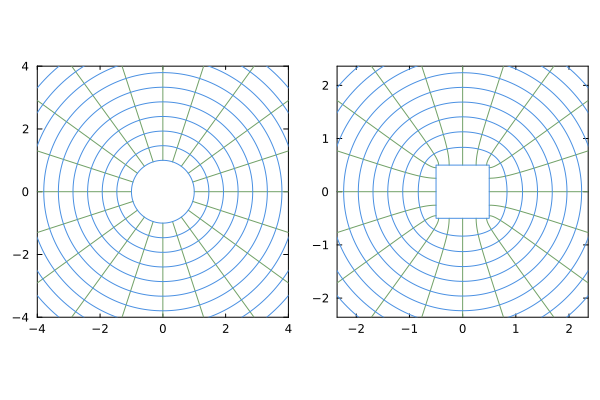

SchwarzChristoffel
A tool to map polygons.
About the package
The purpose of this package is to enable easy construction and evaluation of the conformal mapping from the region inside or outside the unit circle to the exterior of a closed polygon.
A polygon could be a simple shape, of course, like a square, with only a few vertices:

or it could be a more complicated shape, like a NACA 4412 airfoil (assembled with line segments between a finite number of points on its shape):
The engine for constructing the mapping and its inverse is based on the work of Driscoll and Trefethen, Schwarz-Christoffel Mapping, Cambridge University Press, 2002.
Installation
This package requires Julia 1.0 and above. It is a registered package, so it should be installed with add SchwarzChristoffel at the package manager prompt.
Examples can be found in the documentation.